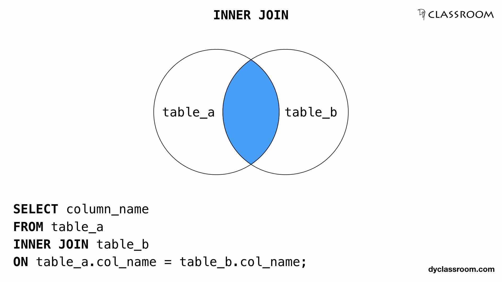

Structured Query Language, or SQL is a tool that allows you to access and control multiple databases of information simultaneously. When working with several databases, one might want to combine columns from different columns to either present a entirely new table or simply add to an existing one. This is where the Join operation comes in. A join clause is used to combine rows from two or more tables, based on a related column between them.There are four different types of Join clauses, each with an unique matching method. The clauses include: Inner, Left, Right, and Full join. Inner Join, which I will be focusing on, returns items that are present in both tables. Meaning that, when you call an inner join clause on two tables, a new result table will be created with records that have matching values in both tables.To get even simpler, records from table 1 and table 2 will only be selected if they meet the join condition. Unlike the other join types, inner join does not take all records from one or both tables regardless of the records meeting the join criteria or not. This is why inner join is considered to create an entirely new table while the other joins just extend the current tables. Example is shown below:
